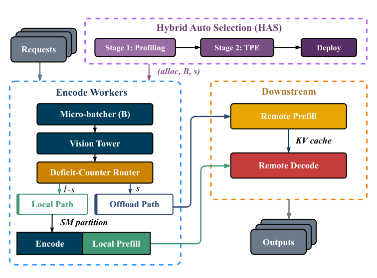
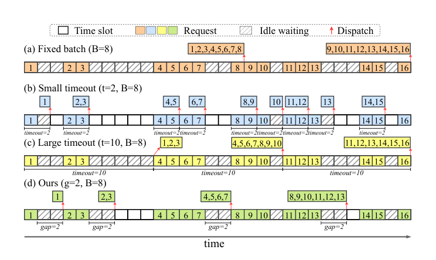
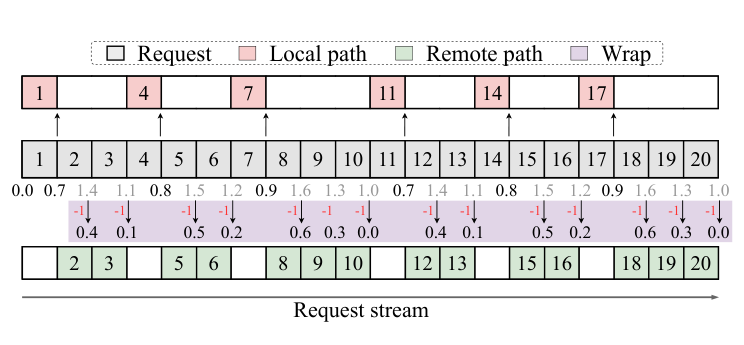
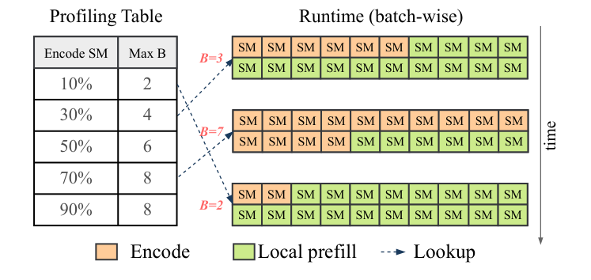
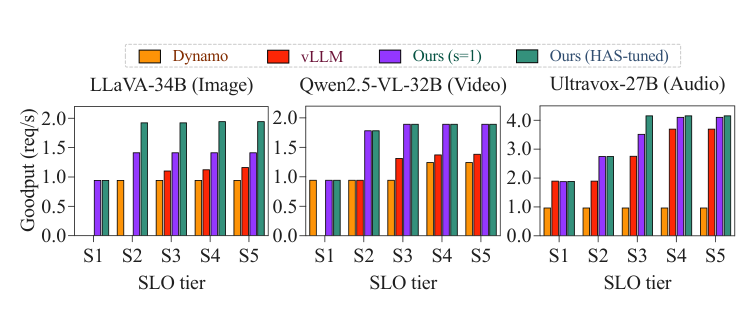
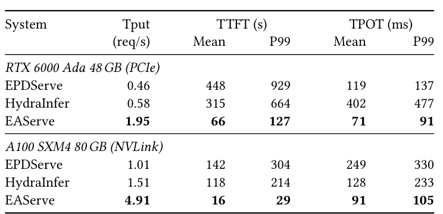

EAServe: Encode-Aware Disaggregated Serving for Multimodal Large Language Models
多模態大型語言模型（Multimodal Large Language Model, MLLM）比文字模型多了一個 Encode 階段；它既是所有請求進入 Prefill–Decode 管線的閘門，單次執行卻又小到讓 GPU 大量閒置。EAServe 把這個矛盾改寫成控制問題：離線聯合搜尋 GPU 配置、Encode batch 上限與 Prefill offload 比例，線上則用自適應 micro-batching、確定性分流與動態 SM 分割落實配置。
實驗事實在三種模態與相同 SLO 約束下，EAServe 的最佳 goodput 相對 NVIDIA Dynamo 與 vLLM 分別最高達 4.3× 與 1.7×；但證據仍侷限於 8-GPU 單機、固定模型與主要為合成的 serving workload，尚不能直接外推到跨節點資料中心。 §4.2 · PDF p.8 · Figure 9
文章目錄
先看懂三段管線：哪些延遲由哪一段決定？
理解障礙不在模型結構本身，而在於同一個請求依序穿過三種資源輪廓完全不同的工作。只要先分清 Encode、Prefill、Decode 的輸入、輸出與瓶頸，就能看懂 EAServe 為何把控制權放在第一段。
一個多模態請求如何變成第一個 token？
| 階段 | 做什麼 | 交給下一段什麼 | 主要系統特性 |
|---|---|---|---|
| Encode | 以 CLIP、ViT 或 Whisper 等 encoder 將影像、影片或音訊轉成 embedding。 | 模態 embedding | 短暫、compute-bound 的 forward pass；單一請求通常不足以填滿 GPU。 |
| Prefill | 將模態 embedding 與文字 prompt 一次送入 LLM backbone，建立 KV cache 並產生第一個輸出 token。 | KV cache 與首 token | attention-heavy，成本隨 context length 增長。 |
| Decode | 逐 token 自回歸生成其餘答案。 | 完整輸出 | 長時間、memory-bandwidth-bound；持續讀取 KV cache。 |
分析把三段拆成獨立 GPU pool，價值在於可以各自擴縮；代價則是 embedding 與 KV cache 必須跨 worker 搬移，而且上游任何失衡都會轉成下游飢餓或排隊。這個因果鏈是後文所有設計選擇的共同起點。 §2.1 · PDF p.2 · Figure 1
goodput 為何比單看 throughput 更重要？
Time to First Token（TTFT）從請求到達一路算到首 token，因此包含 Encode、embedding 傳輸、Prefill 與沿途 queueing；Time per Output Token（TPOT）則描述 Decode 中相鄰 token 的平均間隔。EAServe 以 P99 TTFT 上限 \(T_f\) 與 P99 TPOT 上限 \(T_p\) 定義服務水準目標（Service Level Objective, SLO），再計算
\(N_{\mathrm{SLO\text{-}met}}\) 是同時滿足 TTFT 與 TPOT 門檻的請求數，\(T\) 是實驗持續時間；單位是 request/s。吞吐量很高但 tail latency 爆掉的請求不會被算進 goodput。
這個指標把「做得多」與「按時做完」綁在一起，適合比較不同 EPD 配置，而不是讓 upstream flooding 以較高 throughput 掩蓋違約。 §2.1 · PDF p.2 · Equation 1
SM 分割能隔離什麼，又不能隔離什麼？
Streaming Multiprocessor（SM）是 GPU 執行 kernel 的運算單元。預設 CUDA time-slicing 讓兩個 process 輪流占用全部 SM；libsmctrl 則以 Texture Processing Cluster（TPC）mask 將不同 SM 子集合固定給不同 process，重配時間低於一微秒。這讓 compute-bound 的 Encode 與 local Prefill 可以並行，卻不會切開共享的 HBM bandwidth。
分析因此 EAServe 只把 Prefill 與 Encode 共置，不把 memory-bandwidth-bound 的 Decode 放進同一張 GPU。這不是實作細節，而是方法可行範圍的硬邊界：SM isolation 不能替代記憶體頻寬 isolation。 §2.3 · PDF p.3 · Figure 3
有了 EPD、SLO 與 SM/HBM 的最小背景，下一個問題是：為何最閒的 Encode GPU 反而會成為整條管線的瓶頸？
Encode 明明閒著，為何整條 EPD 管線仍會塞車？
這一章要拆掉一個直覺陷阱：GPU utilization 低不代表它不是 bottleneck。Encode 是所有請求的唯一入口；只要每次 forward pass 太小、服務率低於到達率，queue 就會在這張「大部分時間看似閒著」的 GPU 前持續增長。
症狀：低利用率、上游排隊、下游飢餓同時發生
既有 EPD 框架 NVIDIA Dynamo 將 Encode 獨立成 service，卻以每請求一次 forward 的 pass-through 方式運作，GPU allocation 也由 operator 手動決定。每次工作太小，無法飽和 compute 或 HBM；但到達率一高，這些短小工作仍不足以維持 line rate，使 Prefill、Decode 等不到 embedding，P99 TTFT 便累積成長。 §2.2 · PDF p.3 · Figure 2
實驗事實在 LLaVA-v1.6-34B 的動機實驗中，把 Dynamo 從單請求 Encode 改為固定 \(B=8\) micro-batch，throughput 由 0.75 升至 1.09 req/s，mean TTFT 從 367.4 降至 112.1 秒；mean TPOT 卻由 179 惡化到 411 ms。 §2.2 · PDF p.3 · Table 1
分析這個反例很關鍵：單獨加速 Encode 會一次把更多工作灌入下游，若 Prefill/Decode 配置沒有同步調整，upstream queue 只是換成 downstream queue。故問題不是「batch 越大越好」，而是整條管線的 admission rate 必須與各段 capacity 相配。
根因：三個控制量彼此耦合
- 何時放行：batch 太小浪費 GPU；等太久又直接增加 TTFT。
- Prefill 去哪裡：部分請求可在 Encode GPU 的剩餘算力上做 local Prefill，其餘送往 remote Prefill；比例錯了就讓其中一條 path 排隊。
- GPU 怎麼分：Encode batch 越大，需要越多 SM；local Prefill 能使用的 SM 因此隨 batch 變動。
改變任一項都會改變另外兩項的有效值；再加上 \((E,P,D)\) 三個 pool 的 GPU 數量，8-GPU 測試機就已有數百個候選配置。既有文字 PD 系統沒有 Encode 維度，既有 EPD 系統又不聯合調整 batch bound 與 offload ratio，這正是最接近 baseline 的缺口。 §3.1 · PDF p.4 · Algorithm 1
EAServe 真正導出的三項需求是：入口 policy 必須隨負載調整、閒置 Encode compute 要能安全轉給 Prefill、以及配置搜尋必須同時理解 stage capacity 與非單調的 runtime interaction。
一旦把 Encode 看成「控制流量的閘門」而不是純粹的前處理 service，整個設計便能用一個具體的放水模型串起來。
把 Encode 從被動入口改成管線控制閥
最小心智模型是一座三段式水庫。Encode 不只是第一座水池；它還決定何時開閘、下一段走哪一條渠道，以及要把多少幫浦能力留給自己。
用八個請求走一次完整控制迴路
假設 8 個多模態請求陸續到達，而配置層已選定 Encode batch 上限 \(B=8\) 與 remote-Prefill 比例 \(s=0.7\)。第一個控制問題是是否繼續等下一個請求；若新的 inter-arrival gap 已大於依負載推導的 threshold，就算 batch 尚未滿也立刻 dispatch，避免 TTFT 被固定 timeout 綁死。
Encode 完成後，deficit counter 讓每個 request 穩定地走 local 或 remote Prefill，使累積 remote 比例貼近 \(s\)，而不是靠隨機抽樣產生短期 burst。最後，這個 micro-batch 的實際大小決定 Encode 至少需要多少 SM；剩餘 SM 才交給 local Prefill。三個決策依序回答了「何時、去哪、怎麼分」。


分析類比到此為止：真實系統不是連續水流，而是不同模態、長度與 arrival pattern 的離散請求；local/remote Prefill 還有模型 sharding、NIXL transfer 與 queueing。EAServe 因此不能只用流量公式決定全部配置，而需要「capacity pruning + end-to-end measurement」的兩段式搜尋。 §3 · PDF p.4 · Figure 4
接下來把這個心智模型逐項形式化，並追蹤每個控制量如何在離線與線上之間交接。
EAServe 如何同時決定何時放行、Prefill 去哪裡，以及 SM 怎麼分？
方法的難點是跨時間尺度：deployment 前要選一個可行配置，request 到達後又要以微秒到毫秒尺度守住該配置。EAServe 讓 Hybrid Auto Selection（HAS）負責前者，三個 encode-aware runtime mechanism 負責後者。
第一步：HAS 先砍掉必然失衡的 allocation，再量測非單調區域
HAS 的輸入是 GPU budget \(G\)、模型 \(M\)、workload \(D\) 與目標到達率 \(\Lambda\)，輸出 deployment configuration
\(\mathrm{alloc}\) 是 Encode/Prefill/Decode 的 GPU 分配，\(B\) 是 Encode batch 上限，\(s\) 是送往 remote Prefill 的目標比例。若 throughput 平手，依 mean TTFT、mean TPOT 依序決勝。
Stage 1 將三段放到互不重疊的 GPU subset 上平行 profiling，得到 Encode saturation capacity \(C_E\) 與單一 Prefill/Decode worker capacity \(C_P,C_D\)。每個 allocation 都以最忙階段的 utilization 評分：
\(n_\sigma\) 是該 stage 的 worker 數。若任何 \(\rho_\sigma\ge 1\)，目標到達率已超過該段容量，無論 \(B,s\) 如何微調都不值得部署。HAS 再保留 score 不超過最佳值 1.2× 的 allocation，取前 \(K=3\) 進 Stage 2。
Stage 2 以 Tree-structured Parzen Estimator（TPE）對剩餘的 categorical allocation、discrete \(B\) 與 continuous \(s\) 做 end-to-end trial；最多 30 次，top-3 throughput spread 小於 1% 或連續五輪無改善便停止。 §3.1 · PDF pp.4–5 · Algorithm 1 · Equations 2–4
分析這個分工利用了問題的非對稱性：allocation 的一階瓶頸可由 per-stage capacity 近似判斷；\((B,s)\) 對 queueing、interference 與 latency 的影響卻非單調，交給實測比硬寫 analytical model 更可靠。代價是 workload 或 target rate 改變時需要重新搜尋。
第二步：Poisson-gap rule 決定何時 dispatch
每個 Encode worker 的目標到達率是 \(\lambda=\Lambda/n_E\)。若到達視為 Poisson process，inter-arrival gap \(X\) 服從 exponential distribution；要讓一個上限為 \(B\) 的 batch 以機率 \(p\) 在 gap threshold \(g\) 內填滿，論文令
\(g\propto1/\lambda\)：高負載時 threshold 自動縮短，低負載時放寬。論文固定 \(p=0.6\)，並在 batch full、idle gap 超過 \(g\)、或 batch age 超過 1000 ms 任一條件成立時 dispatch。


這個 policy 每次 arrival 只做 \(O(1)\) 工作，timer overhead 低於一微秒；hard age cap 則避免「每個請求都剛好趕在 \(g\) 前到達」造成無界等待。 §3.2 · PDF pp.5–6 · Equation 5 · Figure 5
第三步：deficit counter 把 \(s\) 變成穩定可量測的 routing ratio
若每個 request 以機率 \(s\) 隨機走 remote path，短時間內可能連續選到同一路徑，令 TPE 看到的 latency 充滿 routing noise。EAServe 改用一個 accumulator \(d\)：每個 request 先令 \(d\leftarrow d+s\)；若 \(d\ge1\)，送 remote 並令 \(d\leftarrow d-1\)，否則走 local。


經過 \(n\) 個 request，remote count 與 \(ns\) 的誤差小於 1；連續 remote 與 local decision 的最大長度分別受 \(\lceil1/(1-s)\rceil\) 與 \(\lceil1/s\rceil\) 約束。Encode 完成後，同一 Prefill destination 的 embeddings 還會包成 contiguous tensor，每個 destination 只做一次 NIXL transfer，而不是每個 request 各送一次。 §3.3 · PDF p.6 · Figure 6
第四步：依實際 batch size 動態重切 SM
startup 時，系統在五個 SM allocation level 上量測各種 Encode batch size，記錄每個 share 能守住 Encode latency 門檻的最大 \(B\)。runtime 每個 micro-batch 查表，給 Encode「足夠但最小」的 SM share，其餘交給 co-resident local Prefill；若 HAS 選 \(s=1\)，就不啟用 local Prefill，也不付 partition overhead。


分析四步形成閉環：HAS 選出 \((\mathrm{alloc},B,s)\)，gap rule 讓實際 batch 接近工作負載節奏，deficit router 讓實際 path ratio 接近 \(s\)，SM table 再使不同實際 batch 都守住 Encode QoS。若其中一項不穩定，offline search 量到的 configuration quality 就無法在 production runtime 重現。 §3.4 · PDF p.7 · Figures 7–8
方法因果鏈已完整；現在要檢驗的是，每個增益是否真的由相應機制產生，以及比較是否在公平條件下成立。
提升來自真正的平衡，還是只把 Dynamo 推到飽和？
最大的判讀障礙是「最高 4.3×」同時混合了兩件事：EAServe 確實改善了 stage balance，但 Dynamo 也在部分測點超過 Encode capacity、queue 隨時間發散。以下把 setup、metric、observation、可支持結論與 caveat 綁在同一個 claim-test unit。
共同實驗地基
主測試機為雙 AMD EPYC 9254、1 TB DRAM 與 8× NVIDIA RTX 6000 Ada 48 GB（PCIe，CUDA 13.0，Ubuntu 22.04）；另以 8× A100 SXM4 80 GB（NVLink）驗證 cross-platform trend。模型涵蓋 LLaVA-v1.6-34B image、Qwen2.5-VL-32B video、Ultravox-v0.6-27B audio；image/video 使用 vLLM 的 synthetic multimodal generator，audio 使用 LibriSpeech speech sample 搭配 random text prompt。 §4.1 · PDF p.7 · Tables 3–4
主比較對 1–5 req/s 的 Poisson arrivals 各處理 500 個 requests，報告三次獨立 run 的中位數。vLLM 0.14.1、Dynamo 0.9.0 與 EAServe 都使用相同 8-GPU budget；Dynamo 由可行 allocations 中手動 sweep 最佳 goodput，HAS 則聯合搜尋 allocation、\(B\)、\(s\)。五組 SLO tier 以 P99 TTFT/TPOT 定義，最嚴格 S1 是 frontier，不代表所有 rate 下都可達。 §4.1 · PDF pp.7–8
Claim 1：encode-aware 控制在三種模態都提高 SLO-compliant rate
實驗事實在 moderate S3 tier，EAServe 的 image/video/audio goodput 分別為 1.93、1.90、4.17 req/s；vLLM 為 1.11、1.32、2.77，Dynamo 為 0.95、0.95、0.98。跨全部 tier 的最佳倍率是相對 Dynamo 4.3×、相對 vLLM 1.7×。 §4.2 · PDF p.8 · Figure 9


可支持結論：stage allocation 與 adaptive batching 是三種模態共同的主要來源；local Prefill 對 image/audio 有額外幫助，對重型 video encoder 則被 HAS 關閉。限制：倍率取自特定 tier 的 best case；不能解讀成所有 workload 的平均加速。
Claim 2：提升不只出現在 RTX，也保留在 A100；但大倍率部分來自 baseline overload
實驗事實在 \(\Lambda=2\) req/s，image 的 P99 TTFT 由 Dynamo 233.8 s 降到 EAServe 10.8 s，video 由 144.8 s 降到 18.0 s；image 的 P99 TPOT 由 764 降到 72 ms，audio 由 869 降到 49 ms。作者解釋 Dynamo 的 per-request Encode 已低於 offered rate，queue 於 500-request run 中單調增長。 §4.2 · PDF p.8 · Figure 10
在 LLaVA、\(\Lambda=5\) req/s 的另一次比較中，EAServe 在 RTX 6000 Ada 為 1.95 req/s、A100 SXM4 為 4.91 req/s；兩個平台都超過 EPDServe 與 HydraInfer，且 P99 TTFT/TPOT 同樣較低。 §4.2 · PDF p.9 · Table 5


可支持結論：消除 Encode overload 確實阻止 queue 發散，cross-platform ordering 也具一致性。限制：當 baseline 位於 unstable operating point 時，tail-latency ratio 會隨 run 長度放大；最可信的讀法是「EAServe 把 operating point 拉回容量內」，而非把 20× latency ratio 視為穩態常數。
Claim 3：dynamic SM split 與 HAS search 各自有獨立證據
SM ablation 固定 allocation 2E(TP1)+1P(TP2)+1D(TP4)、\(B=10\)、\(s=0.55\)、Ultravox-27B 與 \(\Lambda=10\) req/s，只改 sharing policy：
| SM 配置 | Throughput (req/s) | P99 TTFT (s) | P99 TPOT (ms) |
|---|---|---|---|
| No partition / time-slicing | 4.78 | 43.7 | 236 |
| Static 50/50 | 5.07 | 40.7 | 203 |
| Dynamic | 5.21 | 36.7 | 167 |
實驗事實相對 time-slicing，dynamic partition throughput 高 9%，P99 TTFT 低 19%，P99 TPOT 低 42%；相對 static 50/50 仍有 3%、11%、22% 的改善。 §4.4 · PDF p.10 · Table 6
HAS 在同樣 30-trial budget 下，於 image/video/audio 分別在 1.7/1.3/1.7 小時達到「三種方法所有觀測值中的 99th-percentile throughput」；Random 三種都未達標，Coordinate 在 image/video 未達標。Stage 1 於 \(\Lambda=5\) req/s 將 7 個 allocation 剪到 3 個。 §4.3 · PDF pp.9–10 · Figure 12
可支持結論：dynamic SM split 不是只有架構直覺，HAS 也比無資訊 search 更快找到高-throughput region。限制：SM ablation 只在一個 audio 配置；HAS 的「99th percentile」以三種有限搜尋法的 best-observed value 為 reference，不是全域 optimum 的證明。
Claim 4：Poisson 假設遇到 burst 時，throughput 尚穩但 tail latency 先受傷
| Inter-arrival CV | Throughput (req/s) | Mean TTFT (s) | P99 TTFT (s) | P99 TPOT (ms) |
|---|---|---|---|---|
| 0.5（較規律） | 1.77 | 4.16 | 6.67 | 71.4 |
| 1（Poisson） | 1.77 | 4.98 | 10.19 | 71.5 |
| 2（較 bursty） | 1.71 | 6.77 | 16.52 | 71.0 |
實驗事實CV=2 時 throughput 只比 Poisson 低約 3%，但 P99 TTFT 高 62%；TPOT 幾乎不變，符合 burst 主要累積在 admission queue、而非 Decode token loop 的機制。 §4.5 · PDF p.10 · Table 7
可支持結論：hard-age safety valve 與 intra-burst batching 避免系統完全崩潰。限制：只測 Gamma CV=0.5/2 與單一 LLaVA rate，尚未證明 production traces、長尾 burst 或 nonstationary rate 下仍穩健。
證據支持「把 Encode 變成控制點」的核心因果鏈，但也清楚劃出一條線：目前證明的是單機、有限 workload 與特定 GPU sharing primitive。
這些 4.3× 數字可以外推到多節點資料中心嗎？
不能直接外推。論文把單機內 EPD imbalance 拆得很乾淨，也提供 cross-platform、search、SM ablation 與 burst sensitivity；但它尚未把同一套控制面放進跨節點網路、非平穩流量與不同 GPU runtime 中。
最有說服力的地方
- 問題與機制對得上：動機實驗先證明「單獨 micro-batching 會 flood downstream」，方法才聯合控制 batch、routing 與 SM share，避免把 feature list 當貢獻。
- 比較預算透明：vLLM、Dynamo 與 EAServe 使用相同 8-GPU budget；Dynamo sweep allocation，HAS 搜相同 allocation 再加入 \(B,s\)，至少把主要資源預算對齊。
- 不把一個 policy 強套所有模態：video encoder 已占用超過 90% SM 時，HAS 選 \(s=1\) 關閉 local Prefill；這比宣稱 co-location 永遠有利更可信。
- 關鍵假設有 sensitivity check：Poisson arrival 的偏離主要反映在 P99 TTFT，而不是被 throughput average 掩蓋。
六個會限制外部效度的邊界
| 邊界 | 論文目前做到什麼 | 對結論的影響 |
|---|---|---|
| 多節點與網路 | 只測 8-GPU 單機 PCIe/NVLink；跨節點 embedding、KV transfer 明列 future work。 | NIC contention、RDMA transport、rack topology 可能改寫最佳 \((E,P,D,B,s)\)。 |
| workload realism | image/video 是 synthetic input shape 與 random prompt；audio 只有 speech sample 為真實資料。 | prefix reuse、prompt/output-length correlation、modality burst 可能未被重現。 |
| 統計不確定性 | 500 requests、三次 run 的中位數；未報 error bar、confidence interval 或顯著性。 | 小幅差距與 trial-to-trial variance 無法量化；3% throughput ablation 尤其需要誤差範圍。 |
| baseline saturation | Dynamo 在部分 arrival rate 的 Encode queue 發散。 | 大幅 tail-latency ratio 同時反映 method gain 與 unstable baseline，不能當穩態常數。 |
| 可攜性 | dynamic sharing 依賴 NVIDIA TPC mask 與 libsmctrl；HBM bandwidth 仍共享。 | 對其他 vendor/runtime、MIG 或不同 kernel mix 的結果尚未知。 |
| operational cost | HAS 每個 model/workload/rate 離線搜尋，99th percentile 仍需約 1.3–1.7 小時。 | 流量快速漂移時，搜尋結果可能過期；論文未計入 energy、dollar cost 或 reconfiguration amortization。 |
分析此外，deficit routing、NIXL envelope transfer 與 adaptive micro-batching 並沒有完整 factorial ablation；Figure 9 的 \(s=1\) 對比能隔離 local Prefill，但不能把 batching、allocation search 與 transfer aggregation 的個別比例完全拆開。這不否定 end-to-end result，卻限制了讀者對每個 component ROI 的判斷。
論文自己將 multi-node datacenter validation、跨節點 transfer、千級候選配置與 online arrival-rate estimation 列為後續方向。 §4.1、§6 · PDF pp.7, 11
最穩健的結論不是「EAServe 普遍快 4.3×」，而是「當 Encode 是 EPD admission bottleneck 時，聯合控制 stage allocation、batch formation、routing 與 compute isolation，比把 Encode 當 pass-through 更容易維持可行 operating point」。
這個較窄、但更可重用的結論，也指出最值得投入的下一輪實驗。
下一步應把 Encode-aware 控制推向哪些系統邊界？
延伸重點不應只是再加一個 heuristic，而是把論文尚未觀測的 network、nonstationarity 與 portability 變成 HAS 能看見的 state 與 constraint。
四個具體後續實驗
- 推測用線上 estimator 取代固定 \(\lambda\)：比較 sliding window、EWMA 與 change-point detector，讓 gap threshold 在 diurnal drift 與 burst regime 切換時更新；同時量測 estimator lag 對 P99 TTFT 的影響。
- 推測建立 network-aware HAS：把 embedding/KV bytes、NIC/PCIe/NVLink bandwidth、跨 rack hop 與 NIXL queue 納入 Stage 1 capacity profile，檢查原本「local Prefill」的優勢在跨節點後是否轉成 transfer bottleneck。
- 推測抽象化 GPU partition backend：在不同 GPU vendor 與 runtime 上以同一個「minimum safe compute share」介面實作，驗證 latency knee 是否穩定存在，以及共享 HBM 時何種 workload pair 才能安全共置。
- 分析做完整 factorial ablation 與 trace replay：逐一開關 gap batching、deficit routing、envelope transfer、SM partition 與 allocation pruning，並以 production-like multimodal traces 報告 mean/P95/P99、能耗與 dollar goodput。
可重用的設計原則
入口即控制面
pipeline entry 不只是前處理 stage；它最早看見 arrival process，也最適合做 admission、batching 與 downstream routing。
先排除不可能，再量測交互作用
可單調近似的 capacity bottleneck 交給 analytical pruning，難以建模的 interference 與 queueing 留給 end-to-end search。
讓搜尋參數在 runtime 可重現
若 offline optimizer 選了 \(s\)，runtime 就必須限制短期 routing deviation；否則 search 量到的是噪音，不是配置本身。
研究討論題
- 當 arrival rate、modality mix 與 prompt length 同時漂移時，應重跑 HAS、做 model-predictive control，還是在線 bandit search？
- 跨節點後，local Prefill 的價值主要來自少一次 network hop、回收 Encode SM，還是減少 remote queue；如何用實驗拆開？
- 若 GPU 能硬體隔離 compute 與 HBM bandwidth，最佳 co-location 是否會把 Decode 重新納入，從 E+P 擴成 E+P+D multiplexing？
- goodput 只看 SLO compliance；若加入 energy、成本與品質，HAS 的 objective 應採 Pareto frontier、weighted utility，還是風險約束？
最後的 reference 將所有術語、元資料與關鍵數字對回原論文位置，方便複查與簡報引用。
如何查回每個數字與術語？
書目與分類
- 正式標題
- EAServe: Encode-Aware Disaggregated Serving for Multimodal Large Language Models
- 作者
- Kunxiong Zhu、Zhihao Shu、Hangyu Zheng、Minghai Qin、Miao Yin、Gagan Agrawal、Wei Niu
- 發表
- International Conference on Parallel Architectures and Compilation Techniques（PACT ’26），2026
- 識別碼
- arXiv:2609.31551v1；DOI: 10.1145/3838684.3846886
- 分類
- LLM Systems / Inference Serving。主要貢獻是 EPD serving 的配置搜尋、admission/routing 與 GPU sharing，而非新模型架構或傳輸協定。
- 頁數
- 共 13 頁
術語表
- EPD
- Encode–Prefill–Decode，多模態生成服務的三階段 pipeline。
- TTFT
- Time to First Token，從 request arrival 到第一個 output token 的時間。
- TPOT
- Time per Output Token，Decode 期間相鄰 token 的平均間隔。
- Goodput
- 單位時間內同時滿足 TTFT 與 TPOT SLO 的 request 數。
- HAS
- Hybrid Auto Selection；先以 per-stage capacity pruning allocation，再用 TPE 量測 \((B,s)\) 的非單調 interaction。
- Offload ratio \(s\)
- 送往 remote Prefill 的目標 request 比例；\(1-s\) 留在 Encode GPU 上的 local Prefill。
- TPC mask
- Texture Processing Cluster mask；libsmctrl 用來將不同 SM subset 空間隔離給不同 process。
- NIXL
- NVIDIA Inference Xfer Library；論文用於搬移 modality embedding 與 KV cache。
關鍵證據索引
- EPD pipeline 與三段 resource profile：§2.1，PDF p.2，Figure 1。
- TTFT、TPOT、goodput 定義：§2.1，PDF p.2，Equation 1。
- Encode underutilization 與固定 micro-batch 反例：§2.2，PDF p.3，Figure 2、Table 1。
- time-slicing、MPS、MIG、libsmctrl 與 HBM 限制：§2.3，PDF p.3，Figure 3。
- EAServe end-to-end 架構：§3，PDF p.4，Figure 4。
- HAS profiling、pruning 與 TPE refinement：§3.1，PDF pp.4–5，Algorithm 1、Equations 2–4。
- Poisson-gap dispatch：§3.2，PDF pp.5–6，Equation 5、Figure 5。
- deficit-counter routing 與 embedding envelope：§3.3，PDF p.6，Figure 6。
- dynamic SM lookup 與 runtime split：§3.4，PDF p.7，Figures 7–8。
- 模型、硬體、baseline、SLO 與 run protocol：§4.1，PDF pp.7–8，Tables 3–4。
- arrival-rate throughput/latency curves：§4.2，PDF p.8，Figure 10。
- RTX 6000 Ada 與 A100 比較：§4.2，PDF p.9，Table 5。
- HAS search efficiency：§4.3，PDF pp.9–10，Figure 12。
- dynamic/static/no-partition ablation：§4.4，PDF p.10，Table 6。
- Gamma/Poisson arrival sensitivity：§4.5，PDF p.10，Table 7。
- 作者明列的 multi-node、search scale 與 online rate estimation future work：§6，PDF p.11。
原論文：arXiv landing page ↗ · ACM DOI ↗ · 開啟本地 PDF